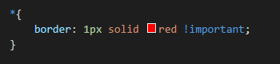

Всеки един HTML елемент може да бъде смятан за кутия. В CSS терминът „box model” се използва, когато става дума за дизайн и оформление. Идеята на „box model” е, че всеки елемент в една уеб станица е правоъгълна кутия, коятo се състои от съдържание(content), граници(borders), отстъпи(paddings) и маржове(margins). Следващото изображение илюстрира този модел. [1]

Фигура 1: Box – model според W3Schools[1]
Моделът на кутията ни позволява да поставяме граница около елементите и да дефинираме място между тях. Ако искаме да се убедим, че наистина всеки елемент в една страница е кутия, можем временно да добавим следния код към стиловете(shtylesheet):
Ето какъв би бил един примерен резултат, ако добавим този код в станица в YouTube.

Фигура 2. Кутиите, които формират една YouTube страница
Content(съдържание) е реално същината на кутията, в която се намират текстът и илюстрациите. Важно е да се отбележи, че когато задаваме свойствата ширина и височина на един елемент със CSS, реално задаваме ширината и дължината на съдържанието му. За да пресметнем цялостния размер на елемента, трябва да прибавим и отстъпите, границите и маржовете.
Нека предположим, че искаме да стилизираме един елемент, така че той да има цялостна ширина 350 пиксела.
Ето я и математиката:
320px (width) + 20px (left + right padding) ) + 10px (left + right border) ) + 0px (left + right margin) ) = 350px
Общата ширина на един елемент трябва да бъде пресмятана по следния начин: Обща ширина на елемент = ширина + ляв отстъп + десен отстъп + лява граница + дясна граница + ляв марж + десен марж Общата височина на един елемент трябва да бъде пресмятана по следния начин: Обща височина на елемент = височина + горен отстъп + долен отстъп + горна граница + долна граница + горен марж + долен марж
Нека разгледаме още един пример:
Фигура 3. Разбит модел на кутията, включващ основна ширина и височина, отстъпи, граници и маржове.[4]
Използвайки горните формули можем да пресметнем общата широчина и височина. Обща ширина: 492px = 20px + 6px + 20px + 400px + 20px + 6px + 20px Обща височина: 192px = 20px + 6px + 20px + 100px + 20px + 6px + 20px Важно е да отбележим, че Internet Explorer 8 и по- ранните му версии включват отстъпите и границите към свойството ширина(width). За да се справим с този проблем, трябва да добавим <!DOCTYPE html> към началото на HTML документа ни.[2]

Фигура 4. Разликата между интерпретацията на модела на кутията от W3S и IE.[3]
Без съмнение моделът на кутията е една от най – объркващите части от HTML и CSS. Разгледаните до тук свойства може би не ни говорят много. За да изясним нещата, ще разгледаме по подробно всички свойства, оформящи модела на кутията, а именно – ширина и височина, отстъп, граница и марж.[4]
Width
Ширината по подразбиране на елемент зависи от неговата показвана стойност. Елементите на ниво блок(block – level) имат стандартна ширина от 100%, изпълвайки цялото хоризонтално пространство. Вградените(inline) и блоково вградените(inline – block) елементи се разширяват и свиват хоризонтално, за да приспособят съдържанието си. Вградените(inline) елементи не могат да имат фиксиран размер, затова свойствата за ширина и височина са от значение само за нелинейните елементи(non – inline). За да зададем конкретна ширина на нелинеен елемент, трябва да използваме свойството за ширина. [6]
Сега ще разгледаме още две свойства, а именно max – width и min – width. 1) Max – width се използва за задаване на максимална ширина на елемент. Чрез задаване на max – width можем да предотвратим това, нашата ширина да стане по- голяма от максималната. Max – width отменя width, но min – width отменя max – width. [26] 2) Min – width се използва за задаване на минималната ширина на даден елемент. По този начин не можем да зададем width, която да е по- малка от min – width. Ширината на даден елемент има стойността на min – width, когато min – width е по – голяма от max – width или когато min – width е по- голяма от width. [27]
Height
Височината по подразбиране на елемент се определя от съдържанието му. Елементът се разширява и свива вертикално, ако е необходимо, за да се приспособи към съдържанието си. За да зададем определена височина на нелинеен елемент, трябва да използваме свойсвото за височина. [7]
Трябва да имаме предвид това, че вградените елементи(inline) не приемат свойства за ширина и височина или стойности, свързани с тях. От друга страна, блоковите(block) и вградените блокови(inline - block) елементи приемат такива свойства и стойности.
Сега ще разгледаме още две свойства, а именно max – height и min – height. 1) Max – height се използва за задаване на максималната височина на елемент. Чрез задаване на max – height можем да предотвратим това, нашата височина да стане по- голяма от максималната. Max – height отменя height, но min – height отменя max – height. [24] 2) Min – height се използва за задаване на минималната височина на даден елемент. По този начин не можем да зададем height, която да е по- малка от min – height. Стойността на min – height отменя max – height и height. [25]
В зависимост от елемента, браузърите могат да използват маржове и отстъпи по подразбиране, за да подпомогнат четливостта и яснотата. Това обикновено се наблюдава при текстови елементи. Маржовте и отстъпите по подразбиране могат да се различават в зависимост от браузъра и от елемента. Добра практика е в началото при стилизиране да нулираме тези стойности като това ни позволява да започнем от нулата и да определяме сами стойностите им.[8]
Margin
Маржовете(margins) изчистват пространството извън границите. Те също са прозрачни като отстъпите. [1] Маржовете могат да се използват с цел улесняване на позиционирането на елементи на определено място на страницата или за подсигуряване, че останалите елементи са на безопасно разстояние.
Особеност при маржовете е, че вертикалните маржове(горе и долу) не се приемат от вградени елементи(inline). Те обаче се приемат от блоковите(block) и вградените блокови(inline – block) елементи. [9]
Collapsing Margins
В CSS, съседните полета на две или повече кутии (които може и може и да не са братя и сестри) могат да се съчетаят, за да образуват един марж. Маржовете, които се комбинират по този начин, се наричат collapsed и полученият марж се нарича collapsed margin. Прилежащите вертикални маржове се свиват с изключение на тези на кутията на елемента – корен. От друга стана, хоризонталните полета никога не се свиват.
Когато два или повече маржа колапснат, получената ширина на маржа е максимумът от ширините на колапснатите маржове. Когато има отрицателни маржове, максимумът на абсолютните стойности на отрицателните съседни маржове се приспада от максимума на положителните съседни маржове. Ако няма положителни, то максимумът на абсолютните стойности на съседните маржове се изважда от нула.[23]
Padding
Отстъпите(paddings) изчистват пространството около съдържанието. Те са прозрачни.[1] За разлика от маржовете, отстъпите работят вертикално върху вградените(inline) елементи. Този вертикален отстъп може да се слее с линията под или над даден елемент, но отстъпа ще се покаже.[10]
Когато става дума за маржове и отстъпи, вградените(inline) елементи се влияят малко по – различно от блоковите(block) и вградените блокови елементи(inline – block). Маржовете работят само хоризонатално(ляво и дясно) на вградените елементи. Отстъпите работят и на четирите им страни. Маржовете и отстъпите работят нормално при блоковите и вградените блокови елементи. [11]
Деклариране на Margin и Padding
В CSS има повече от един начин за деклариране на стойности на определени свойства. Можем да използваме дългия запис, изброявайки няколко свойства и стойности една след друга, като в него всяка стойност има собствено свойство. Можем да използваме и кратък запис, като изброяваме няколко стойности с едно свойство. Не всички свойства имат алтернативен кратък запис, така че трябва да се уверим, че използваме правилната структура на свойство и стойност.
Свойствата на маржовете и отстъпите имат както дълга, така и къса форма. Когато използваме краткия запис за марж, за да зададем една и съща стойност за всичките четири страни на даден елемент, уточняваме една стойност:
За да зададем една стойност за горе и долу(top and bottom) и друга стойност за лявата и дясната (left and right) страна на даден елемент, задаваме две стойности: първата за горе и долу, а втората за ляво и дясно. В примера поставяме маржове от 15 пиксела в горната и долната част на <div> и маржове от 20 пиксела отляво и отдясно:
За да зададем уникални стойности за четирите страни на даден елемент, посочваме тези стойности в следния ред: горе, дясно, долу, ляво, движейки се по посока на часовниковата стрелка. В следващия пример поставяме марж от 5 пиксела в горната част на <div>, 10 пиксела вдясно, 0 пиксела в долната част и 12 пиксела вляво:
Използването само на марж или отстъп с произволен брой стойности се счита за кратък запис. С дългия запис можем да зададем стойност за една страна, използвайки уникални свойства. Името на свойството (в този случай марж или отстъп) е последвано от тире и след него е името на страната, за която се прилага: горе, дясно, долу, ляво. В следващия пример лявият отстъп приема само една стойност и поставя лявия отстъп за този елемент. Свойството „горен – марж” приема само една стойност и ще зададе горния марж за този елемент.

Когато желаем да идентифицираме само една стойност на маржа или отстъпа е най-добре да използваме дългия запис. Така кодът ни е ясен и ни помага да избегнем объркване.[12]
Цветове на Margin и Padding
Свойствата марж и отстъп са абсолютно прозрачни и не могат да приемат цветови стойности. Тъй като са прозрачни, те показват фона на елементите, към които се отнасят. При маржа виждаме цвета на фона на елемента – родител, а при отстъпа – този на елемента, към който се прилага отстъпа. [13]
Границата(border) се намира около отстъпите и съдържанието. [1] Тя реално попада между маржа и отстъпа като контур около даден елемент. Границата изисква три стойности: ширина(width), стил(style) и цвят(color). Краткият запис ни осигурява възможността да изпишем и трите стойности на един ред, като трябва да бъдат в следната последователност: ширина, стил, цвят. Ако използваме дългия запис, тези три стойности могат да се разбият на следните: ширина на границата(border – width), стил на границата(border – style) и цвят на границата(border – color). Този запис е полезен при промяна или презаписване на дадена гранична стойност.
Границите могат да имат различен вид. Най-често срещаните стойности за стил(style) на границата са плътна(solid), двойна(double), пунктирана(dashed), на точки(dotted) и без граница(none), но има и други. Следващият пример е за плътна сива граница, която я широка 6 пиксела и е около четирите страни на <div> елемента.[14]
Ето и още примери:

Както при маржа и остъпа, ако искаме, можем да имаме граница само от едната страна на даден елемент. Това изисква някое от следните свойства: border – top, border – right, border – bottom, border – left. Ако желаем например можем да имаме граница само в дъното на елемент. Освен това, стиловете за отделните страни на границата могат да бъдат контролирани на още по – фино ниво. Можем да променим ширината на долната граница на елемент чрез следното свойство: border – bottom – width. Същото може да се направи и при другите две свойства – цвят и стил. [15]
Border Radius
Радиусът е свойството на границата, което ни позволява да заобляме ъглите на даден елемент. Свойството border – radius приема дължини, включително проценти и пиксели, които определят радиуса, по който ъглите на даден елемент трябва да бъдат заоблени. Една стойност ще обхване всички четири ъгъла на един елемент еднакво; две стойности ще закръглят top-left/bottom-right и top-right/bottom-left ъгъли в този ред; четири стойности ще закръглят top-left, top-right, bottom-right, and bottom-left в този ред.
Също така, радиусът на границата може да се изпише чрез дълъг запис, който ни позволява да променим радиусите на отделните ъгли на даден елемент. Записът започва с border, продължава с вертикалното разположение на ъгъла (top или bottom) и хоризонталното разположение на ъгъла (left или right) и след това завършва с radius. Например, за да променим радиуса на горния десен ъгъл на <div>, можем да използваме border – top – right – radius.[16]
Ето как биха изглеждали <div> елементи със следните свойства: 1) border – radius: 5px; 2) border – radius: 50%; 3) border – radius: 15px 75px.
Border – image
Border – image ни позволява да зададем изображение, което да използваме вместо нормална граница около даден елемент. Това свойство ни дава кратък запис за настройване на следните свойства: border-image-source, border-image-slice, border-image-width, border-image-outset and border-image-repeat, които съответно задават: пътя до изображението, което ще бъде използвано за граница; как да бъде нарязано; каква да е ширината му; пространството, на което се простира изображението извън кутията и дали то да се повтаря, закръгли или разтегли.[31]
Фигура 7. Примери за border – image
Box – decoration – break
Box – decoration – break ни позволява да контролираме това как да се изобразяват декорациите на кутията, когато един елемент е „разкъсан”. Това може да се случи в края на някой ред, при преминаване от колона в колона и в много други случаи. Свойствата, които са контролирани от box – decoration – break са следните: background, border, border – radius, border – image, box – shadow, margin и padding.
Стойностите, които може да приема са: 1) Slice първоначална стойност. Декорациите се прилагат към целия елемент и разкъсват краищата на фрагментите му. 2) Clone: декорациите се прилагат за всеки фрагмент на елемента все едно, че фрагментите не са разкъсани. Границите обгръщат и четирите ръба на всеки фрагмент от елемента и фоновете се презареждат изцяло за всеки фрагмент поотделно.[30]
В следващия пример имаме параграф с оранжева граница и 1em горен марж. Този параграф е разделен в две колони. Горният параграф има box – decoration – break: slice, а вторият box – decoration – break: clone.
Фигура 6. Slice и clone стойности на box – decoration – break
Overflow
Това свойство определя какво се случва, ако съдържанието прелее извън кутията на даден елемент. Също така определя дали да изреже съдържанието, ако то е по- голямо от определено поле. Overflow работи само за блокови елементи с определена височина.
Стойностите, които може да приема overflow са: 1) Visible – съдържанието, което не се побира, не се изрязва, а излиза извън кутията. Това е стойността по подразбиране. 2) Hidden – съдържанието, което не се побира, се изрязва и не се вижда. 3) Scroll – съдържанието, което не се побира, се изрязва, но се добавят и плъзгащи летни, с които може да се види. 4) Auto – ако съдържанието, което не се побира, е изрязано, то трябва автоматично да се добавят плъзгащи ленти. 5) Initial – поставя overflow на стойността му по подразбиране. 6) Inherit – наследява стойността от елемента – родител.[28]
Overflow-x указва какво да се случи с левия/десния край на съдържанието, ако то препълва елемента. А overflow – y какво да се случи с долния/горния край на съдържанието.
Box – shadow
Свойството box – shadow прикрепя една или повече сенки към елемента. Сянката може да има дължина и цвят. Стойностите, които може да приема са: 1) None: по подразбиране, без сянка. 2) H – shadow позицията на хоризонталната сянка; позволени са и отрицателни стойности. 3) V – shadow: позицията на вертикалната сянка; позволени са и отрицателни стойности. 4) Blur: замъгленото разстояние. 5) Spread: размера на сянката; позволени са и отрицателни стойности. 6) Color: цвета на сянката; цветът по подразбиране е черен. 7) Inset: променя сянката от външна на вътрешна.[29]
Както вече споменахме, общата ширина на един елемент включва и неговите отстъпи, граници и маржове. CSS3 обаче предоставя свойство box – sizing, което ни позволява да променим как точно да работи моделът на кутията и как да се изчислява размерът на елементите. Box – sizing приема три основни стойности : content – box, padding – box и border – box, всяка от които има различно отражение върху начина, по който се изчислява размера на кутията. [17]
Content Box
Стойността content – box е тази по подразбиране. Ако не използваме свойсвтово box – sizing, това ще бъде стойността по подразбиране за всички елементи. Размерът на даден елемент започва с ширината и височината,а след това се добавят стойности на отстъп, граница или марж. [18]
Padding Box
Padding – box променя модела на кутията, като включва всички стойности на отстъпа към ширината и височината на елемента. Ако даден елемент има ширина 400 пиксела и padding от 20 пиксела около всяка страна, действителната ширина ще остане 400 пиксела. С увеличаване стойностите на padding-а, съдържанието на дадения елемент се свива пропорционално.
Ако добавим граница или марж, тези стойности ще бъдат добавени към ширината или височината, за да се изчисли пълният размер на кутията. Например, ако добавим граница от 10 пиксела и отстъп от 20 пиксела около всяка страна на елемент с ширина 400 пиксела, действителната ширина ще стане 420 пиксела. [19]
Border Box
Border – box променя модела на кутията, така че всички border и padding стойности да са включени в ширината и височината на елемента. Когато се използва border – box, ако даден елемент има ширина 400 пиксела, padding от 20 пиксела около всяка страна и граница от 10 пиксела около всяка страна, действителната ширина ще остане 400 пиксела. Ако добавим марж, стойностите му ще трябва да бъдат добавени при изчисляване на пълния размер на кутията.[20]
Най-общо казано, най-добрата стойност за box – sizing е border – box . Border – box изключително улеснява нашите пресмятания. Ако искаме даден елемент да бъде широк 400 пиксела, той е и той ще остане широк 400 пиксела, независимо от това, какви padding или border стойности добавяме към него. Друг плюс е, че можем да смесваме различни стойности на дължини без това да повлияе на първоначалния размер(проценти, пиксели и др.).[21]
И все пак трябва да внимаваме, когато използваме box – sizing , защото по- старите версии на браузърите не го поддържат.
Повечето браузъри имат така наречените „Инструменти за програмисти”(Developer Tools). Тези инструменти ни позволяват да инспектираме елемент на страницата, да видим къде се намира този елемент в HTML документа и да видим какви CSS свойства и стойности се прилагат към него. Повечето от тези инструменти също включват box- model диаграма, за да ни покажат изчисления размер на даден елемент.[22]
За да видим тези Developer Tools в Google Chrome, трябва да кликнем с дясно копче на мишката върху страницата, която искаме да инспектираме и от менюто да изберем „Инспектиране” (Inspect). Така се зарежда прозорец в дясната част на страницата в браузъра, който предоставя различни инструменти за изследване на нашия код. Чрез клавишната комбинация „Ctrl+Shift+C” можем да задържим курсора на мишката над различни елементи и да кликнем върху тях, за да ги инспектираме. След като сме избрали елемент, можем да видим, че се е заредило разбиване на съответния box – model за нашия елемент.
Фигура 5. The Google Chrome Developer Tools, които ни помагат при инспектирането на HTML и CSS на всяка една страница
Има много какво да научим от нашия код, ако решим да се заиграем с Developer Tools, било то в Google Chrome, Mozilla Firefox, Apple Safari или други браузъри. Добре е тези инструменти винаги да ни бъдат отворени, когато пишем HTML и CSS, защото могат много да ни помогнат. Също така е добра идея да инспектираме кода и на други уебсайтове, за да обогатим знанията си, гледайки как са разработени те.
Изучаването на различните части на box- model не е толкова лесна задача. Всички тези понятия отнемат доста време, докато се овладеят напълно. Box – model е една от най-объркващите части от процеса на изучаване на HTML и CSS, но също така е една от най-мощните. Ако овладеем box – model, всичко останало като позициониране на съдържание ще ни бъде доста лесно.
Е, сега е време да се потупаме по рамото. Аз вече го направих, ще изчакам и вас...
[1] Урок за “CSS Box Model”, [ https://www.w3schools.com/css/css_boxmodel.asp ], последно посетен на 26.04.2017г.
[2]Урок за “Width and Height of an Element”, [ https://www.w3schools.com/css/css_boxmodel.asp ], последно посетен на 26.04.2017г.
[3]Статия в Уикипедия за “CSS box model”, поледна модификация на 03.12.2016г., [ https://en.wikipedia.org/wiki/CSS_box_model ]
Източници от [4] до [22] се намират на следния линк: [ http://learn.shayhowe.com/html-css/opening-the-box-model/ ], последно посетени на 25.04.2017г.
[4] Статия в Shay Howe на тема “Working with the Box Model”
[5] Статия в Shay Howe на тема “Width and Height”
[6] Статия в Shay Howe на тема “Width”
[7] Статия в Shay Howe на тема “Height”
[8] Статия в Shay Howe на тема “Margin and Padding”
[9] Статия в Shay Howe на тема “Margin”
[10] Статия в Shay Howe на тема “Padding”
[11] Статия в Shay Howe на тема “Margin and Padding on Inline-Level Elements”
[12] Статия в Shay Howe на тема “Margin and Padding Declarations”
[13] Статия в Shay Howe на тема “Margin and Padding Colors”
[14] Статия в Shay Howe на тема “Borders”
[15] Статия в Shay Howe на тема “Individual Border Sides”
[16] Статия в Shay Howe на тема “Border Radius”
[17] Статия в Shay Howe на тема “Box Sizing”
[18] Статия в Shay Howe на тема “Content Box”
[19] Статия в Shay Howe на тема “Padding Box”
[20] Статия в Shay Howe на тема “Border Box”
[21] Статия в Shay Howe на тема “Picking a Box Size”
[22] Статия в Shay Howe на тема “Developer Tools”
[23] Документация на World Wide Web Consortium(W3C) за “Collapsing margins”, [ https://www.w3.org/TR/CSS21/box.html ], последно посетена на 25.04.2017г.
[24] Статия в Mozilla Developer Network на тема “max – height”, [ https://developer.mozilla.org/en-US/docs/Web/CSS/max-height ], последна модификация на 25.01.2017г.
[25] Статия в Mozilla Developer Network на тема “min – height”, [ https://developer.mozilla.org/en-US/docs/Web/CSS/min-height ], последна модификация на 25.01.2017г.
[26] Статия в Mozilla Developer Network на тема “max – width”, [ https://developer.mozilla.org/en-US/docs/Web/CSS/max-width ], последна модификация на 27.04.2017г.
[27] Статия в Mozilla Developer Network на тема “min – width”, [ https://developer.mozilla.org/en-US/docs/Web/CSS/min-width ], последна модификация на 03.04.2017г.
[28] Урок за “CSS overflow Property”, [ https://www.w3schools.com/cssref/pr_pos_overflow.asp ], последно посетен на 27.04.2017г.
[29] Урок за “CSS3 box – shadow Property”, [ https://www.w3schools.com/cssref/css3_pr_box-shadow.asp ], последно посетен на 27.04.2017г.
[30] Статия на Marie Mosley на тема “box-decoration-break”, [ https://css-tricks.com/almanac/properties/b/box-decoration-break/ ], последна модификация на 15.06.2015г.
[31] Урок за “CSS3 border – image Property”, [ https://www.w3schools.com/cssref/css3_pr_border-image.asp ], последно посетен на 27.04.2017г.